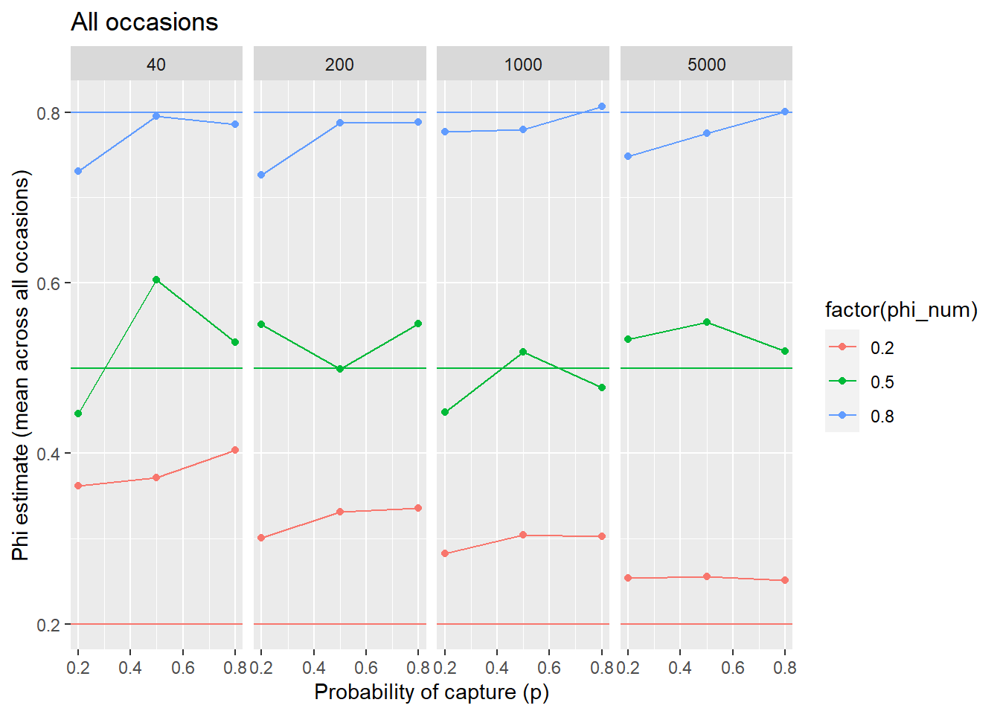
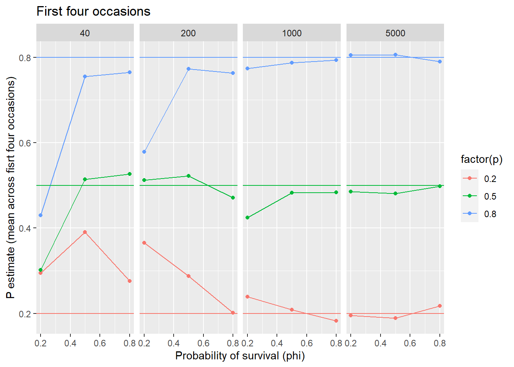

Simple CJS models to get phi and p estimates to compare with Neural Network CMR
In all the models below, 1 = not observed and 2 = observed in the input encounter data.
Encounter data are available here.
18.1 [t,t] model
Model with phi and p for each age-in-samples (column in the encounter history file)
Probability of survival (phi) model structure:
phi[t] <- betaInt[t]
Probability of capture (p) model structure:
p[t] <- betaP[t]
Model code is in ./models/cmrNN_SIM/tt/modelCMR_tt_NN_SIM_functionsToSource.R
Model is run ‘by hand’ in ./models/cmrNN_SIM/tt/modelCMR_tt_NN_SIM_makeFile.R
Model run output is stored in ./models/cmrNN_SIM/tt/runsOut/localSimData/
Simulated data were created for 12 time steps (occasions), across a range of number of fish (n, 40, 200, 1000, 5000), simulated probability of capture (p, 0.2, 0.5 0.8) and probability of survival (phi, 0.2, 0.5 0.8, true) [may need to add replicates for a paper].
p’s and phi’s are constant across time, except When phi == true when phi’s follow this pattern (0.812,0.810,0.749,0.647,0.640,0.691,0.830,0.330,0.669,0.560,0.684), which is average survival across time in our long-term study area, the West Brook.
The number of fish entering the simulations at each time step start at n/2 and are reduced by 1/2 for each subsequent time step. With this approach, the total number of fish entering approximates n, but the entering fish are spread over time in a way that is similar to what happens in the field.
For each set of simulation conditions, an encounter history (eh) file is created with the file name = eh_px.x_phixx_nxxxx.csv where xs are the values for each variable. Each row is a fish and each column is an occasion.
Simulation output is stored in .RData files named as tt_NN_SIM__px.x_phixx_nxxxx.RData and model run summaries are stored in a cumulative .csv file local_summary_out_all.csv for all runs and local_summary_out_phi_sim.csv for runs with phi = (0.2, 0.5, 0.8) and local_summary_out_phi_sim.csv for runs with phi = true.
In the summary files, the variables are:
X, var, mean, sd, X2.5., X50., X97.5., Rhat, n.eff, p, phi, n, variable, time, phi_num,
where:
X = row number var = the variable name(phi or p) combined with the time step mean = mean estimate across MCMC iterations sd = sd estimate across MCMC iterations X2.5. = 2.5 percentile estimate across MCMC iterations X50. = median estimate across MCMC iterations X97.5. = 97.5 percentile estimate across MCMC iterations Rhat = indicator of model convergence for the variable. < 1.05 is good. n.eff = effective number of observations in the estimate. Bigger is better p = the p value used in the simulation phi = the phi value used in the simulation. This is a character to accommodate the true possibility. n = the n value used in the simulation variable = the variable alone without the time step (as in var) time = time step [1:12] phi_num = the phi value used in the simulation. This value is numeric.
ggplot(summary_over_t |>filter(variable =="phi"), aes(p, mean, color =factor(phi_num))) +geom_point() +geom_line() +geom_hline(aes(yintercept = phi_num, color =factor(phi_num))) +labs(x ="Probability of capture (p)", y ="Phi estimate (mean across all occasions)") +ggtitle("All occasions") +facet_grid(~ n)

Code
ggplot(summary_over_t_time_lt_5 |>filter(variable =="phi"), aes(p, mean, color =factor(phi_num))) +geom_point() +geom_line() +geom_hline(aes(yintercept = phi_num, color =factor(phi_num))) +labs(x ="Probability of capture (p)", y ="Phi estimate (mean across first four occasions)") +ggtitle("First four occasions") +facet_grid(~ n)
ggplot(summary_over_t |>filter(variable =="p"), aes(phi_num, mean, color =factor(p))) +geom_point() +geom_line() +geom_hline(aes(yintercept = p, color =factor(p))) +labs(x ="Probability of survival (phi)", y ="P estimate (mean across occasions)") +facet_grid(~ n)
Code
ggplot(summary_over_t_time_lt_5 |>filter(variable =="p"), aes(phi_num, mean, color =factor(p))) +geom_point() +geom_line() +geom_hline(aes(yintercept = p, color =factor(p))) +labs(x ="Probability of survival (phi)", y ="P estimate (mean across fisrt four occasions)") +ggtitle("First four occasions") +facet_grid(~ n)

18.3 Retrieve model results from a random simulation run
Code
# Following https://oliviergimenez.github.io/bayesian-cr-workshop/worksheets/4_demo.html# load('./models/cmrNN_SIM/tt/runsOut/localSimData/tt_NN_SIM__p0.5_phi05_n5000.RData') out_NN_SIM <- d#Input data eh <-read.csv('./models/cmrNN_SIM/tt/runsOut/localSimData/eh_p0.5_phi05_n5000.csv')
18.3.1 Model code
In the model code, a value of 1 for z or in gamma or omega signifies the individual is alive and a value of 2 signifies the individual is dead. y[i,j] is the observed data (encounter history file).
Decided to use the simulations above, as these files have > 50 time steps (cohorts are spread across time) and it is easier to interpret results with an age-based encounter history with 12 time steps.
Xiaowei and students created simulation files here that were downloaded into C:\Users\bletcher\OneDrive - DOI\projects\wbBook_quarto_targets\data\in\fromXioawei as synthetic_data-20240124T150938Z-001.zip and extracted into ./synthetic_data-20240124T150938Z-001. These .npy files are read into R and run using ./models/cmrNN_SIM/tt/modelCMR_tt_NN_SIM_makeFile.R to loop over all the files. Model output goes into C:/Users/bletcher/OneDrive - DOI/projects/wbBook_quarto_targets/models/cmrNN_SIM/tt/runsOut/ using the input file name concatenated between tt_NN_SIM and the date.
Source Code
# Simulation - CJS modelSimple CJS models to get phi and p estimates to compare with Neural Network CMRIn all the models below, 1 = not observed and 2 = observed in the input *encounter data*. Encounter data are available [here](https://drive.google.com/drive/folders/1Bth4jdH6vZuE3t7ETL3MMxPo2oxmakZs). ```{r}#| label: librariesModelsNimbleRiverNN#| echo: falselibrary(getWBData)library(lubridate)library(kableExtra)library(GGally)library(nimble)library(nimbleEcology)library(MCMCvis)library(reticulate)library(tidyr)library(tidyverse)library(targets)``````{r}#| label: modelsCMR_NN_SIM_opts#| include: falseknitr::opts_chunk$set(warning =FALSE, message =FALSE)```## \[t,t\] modelModel with phi and p for each age-in-samples (column in the encounter history file)Probability of survival (phi) model structure:phi\[t\]\<- betaInt\[t\]Probability of capture (p) model structure:p\[t\]\<- betaP\[t\]Model code is in `./models/cmrNN_SIM/tt/modelCMR_tt_NN_SIM_functionsToSource.R`\Model is run 'by hand' in `./models/cmrNN_SIM/tt/modelCMR_tt_NN_SIM_makeFile.R`\Model run output is stored in `./models/cmrNN_SIM/tt/runsOut/localSimData/`Simulated data were created for 12 time steps (occasions), across a range of number of fish (n, 40, 200, 1000, 5000), simulated probability of capture (p, 0.2, 0.5 0.8) and probability of survival (phi, 0.2, 0.5 0.8, true) [may need to add replicates for a paper]. p's and phi's are constant across time, except When phi == `true` when phi's follow this pattern (0.812,0.810,0.749,0.647,0.640,0.691,0.830,0.330,0.669,0.560,0.684), which is average survival across time in our long-term study area, the West Brook. The number of fish entering the simulations at each time step start at n/2 and are reduced by 1/2 for each subsequent time step. With this approach, the total number of fish entering approximates n, but the entering fish are spread over time in a way that is similar to what happens in the field.For each set of simulation conditions, an encounter history (eh) file is created with the file name = `eh_px.x_phixx_nxxxx.csv` where `x`s are the values for each variable. Each row is a fish and each column is an occasion. Simulation output is stored in .RData files named as `tt_NN_SIM__px.x_phixx_nxxxx.RData` and model run summaries are stored in a cumulative .csv file `local_summary_out_all.csv` for all runs and `local_summary_out_phi_sim.csv` for runs with phi = (0.2, 0.5, 0.8) and `local_summary_out_phi_sim.csv` for runs with phi = `true`. In the summary files, the variables are: X, var, mean, sd, X2.5., X50., X97.5., Rhat, n.eff, p, phi, n, variable, time, phi_num, where: *X* = row number *var* = the variable name(phi or p) combined with the time step *mean* = mean estimate across MCMC iterations *sd* = sd estimate across MCMC iterations *X2.5.* = 2.5 percentile estimate across MCMC iterations *X50.* = median estimate across MCMC iterations *X97.5.* = 97.5 percentile estimate across MCMC iterations *Rhat* = indicator of model convergence for the variable. < 1.05 is good.*n.eff* = effective number of observations in the estimate. Bigger is better*p* = the `p` value used in the simulation *phi* = the `phi` value used in the simulation. This is a character to accommodate the `true` possibility. *n* = the `n` value used in the simulation*variable* = the variable alone without the time step (as in var) *time* = time step [1:12]*phi_num* = the `phi` value used in the simulation. This value is numeric. ## Simulations ### Get data Simulation data without phi == `true````{r}#| label: get_sim_data summary <-read.csv('./models/cmrNN_SIM/tt/runsOut/localSimData/local_summary_out_phi_sim.csv') |>mutate(median = X50.) summary_over_t <- summary |>group_by(variable, p, phi_num, n) |>summarize(mean =mean(median),sd =sd(median),count =n() ) |>ungroup() summary_over_t_time_lt_5 <- summary |>filter(time <5) |>group_by(variable, p, phi_num, n) |>summarize(mean =mean(median),sd =sd(median),count =n() ) |>ungroup()```### Plot results #### Probability of survival (phi) With poor data, estimates trend towards 0.5, the mean of the prior on the variable.```{r}#| label: plot_sim_data_phiggplot(summary |>filter(variable =="phi"), aes(time, mean, color =factor(p))) +geom_point() +geom_line() +geom_hline(aes(yintercept = phi_num)) +labs(x ="Time (age)", y ="Phi estimate") +facet_grid(phi_num ~ n)ggplot(summary_over_t |>filter(variable =="phi"), aes(p, mean, color =factor(phi_num))) +geom_point() +geom_line() +geom_hline(aes(yintercept = phi_num, color =factor(phi_num))) +labs(x ="Probability of capture (p)", y ="Phi estimate (mean across all occasions)") +ggtitle("All occasions") +facet_grid(~ n)ggplot(summary_over_t_time_lt_5 |>filter(variable =="phi"), aes(p, mean, color =factor(phi_num))) +geom_point() +geom_line() +geom_hline(aes(yintercept = phi_num, color =factor(phi_num))) +labs(x ="Probability of capture (p)", y ="Phi estimate (mean across first four occasions)") +ggtitle("First four occasions") +facet_grid(~ n)```#### Probabilit of capture (p)```{r}#| label: plot_sim_data_pggplot(summary |>filter(variable =="p"), aes(time, mean, color =factor(phi_num))) +geom_point() +geom_line() +geom_hline(aes(yintercept = p)) +labs(x ="Time (age)", y ="P estimate") +facet_grid(p ~ n)ggplot(summary_over_t |>filter(variable =="p"), aes(phi_num, mean, color =factor(p))) +geom_point() +geom_line() +geom_hline(aes(yintercept = p, color =factor(p))) +labs(x ="Probability of survival (phi)", y ="P estimate (mean across occasions)") +facet_grid(~ n)ggplot(summary_over_t_time_lt_5 |>filter(variable =="p"), aes(phi_num, mean, color =factor(p))) +geom_point() +geom_line() +geom_hline(aes(yintercept = p, color =factor(p))) +labs(x ="Probability of survival (phi)", y ="P estimate (mean across fisrt four occasions)") +ggtitle("First four occasions") +facet_grid(~ n)```## Retrieve model results from a random simulation run```{r}#| label: OB_tt_NN# Following https://oliviergimenez.github.io/bayesian-cr-workshop/worksheets/4_demo.html# load('./models/cmrNN_SIM/tt/runsOut/localSimData/tt_NN_SIM__p0.5_phi05_n5000.RData') out_NN_SIM <- d#Input data eh <-read.csv('./models/cmrNN_SIM/tt/runsOut/localSimData/eh_p0.5_phi05_n5000.csv')```### Model codeIn the model code, a value of `1` for `z` or in *gamma* or *omega* signifies the individual is alive and a value of `2` signifies the individual is dead. `y[i,j]` is the observed data (encounter history file).```{r}#| label: OB_tt_NN_code out_NN_SIM$modelCode```### Model statistics```{r, echo=FALSE, results='asis'}#| label: OB_tt_NN_statsTablekable(as_tibble(out_NN_SIM$runData), caption = "Run statistics")paste0('Run time = ', round(out_NN_SIM$runTime, 3), ' ', attr(out_NN_SIM$runTime, "units"))```## Simulation data from XioaweiDecided to use the simulations above, as these files have > 50 time steps (cohorts are spread across time) and it is easier to interpret results with an age-based encounter history with 12 time steps. Xiaowei and students created simulation files [here](https://drive.google.com/drive/folders/1Bth4jdH6vZuE3t7ETL3MMxPo2oxmakZs) that were downloaded into `C:\Users\bletcher\OneDrive - DOI\projects\wbBook_quarto_targets\data\in\fromXioawei` as `synthetic_data-20240124T150938Z-001.zip` and extracted into `./synthetic_data-20240124T150938Z-001`. These .npy files are read into R and run using `./models/cmrNN_SIM/tt/modelCMR_tt_NN_SIM_makeFile.R` to loop over all the files. Model output goes into `C:/Users/bletcher/OneDrive - DOI/projects/wbBook_quarto_targets/models/cmrNN_SIM/tt/runsOut/` using the input file name concatenated between `tt_NN_SIM` and the date.